在量的比较问题中，还有一类题目需要孩子根据日常生活中的经验进行判断。这类题目实际上是在给孩子灌输简单的物理学原理，如守恒的原理，杠杆的原理，浮力、弹力、压力等原理。通过解决这类量的比较问题，孩子能够理解不同的量之间的对应关系，如弹簧长短与物品轻重之间的关系、船吃水深浅与物品轻重之间的关系。解决这类问题还能够让孩子了解有些东西是始终不变的，即使形状，位置等改变了，它也是守恒的。
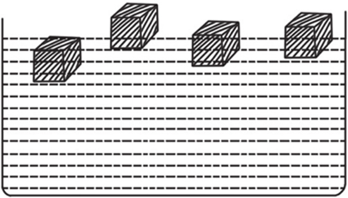
典型例题 1 4根同样的弹簧上分别挂了4种不同的物品，你能判断出哪种物品最重，哪种物品最轻吗？
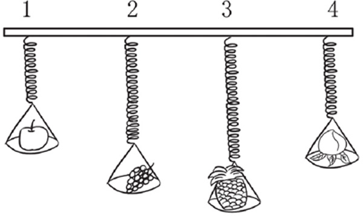
同样的弹簧，哪根被拉得越长，那根所挂的物品就越重。1号弹簧最短，3号弹簧最长，所以1号弹簧所挂的物品最轻，3号弹簧所挂的物品最重。
典型例题 2 4艘同样的货轮从码头装好货物出发了，你能判断出哪艘货轮所装的货物最重吗？
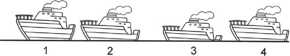
同样的货轮，哪艘吃水越深（浸入水里的部分越深），所装的货物就越重。从上图可以看出，3号货轮吃水最深，所以3号货轮上装的货物最重。
典型例题 3 3个同样的水壶都装满了水，分别往3个同样大小的玻璃杯里倒水，你知道下图中哪个水壶里剩的水最多吗？
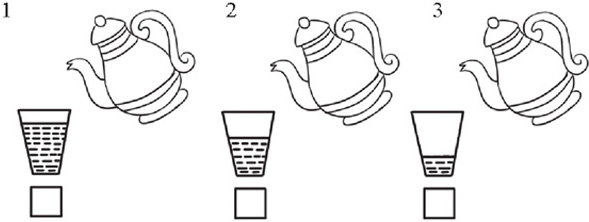
实际上这里考查的是守恒的原理。玻璃杯里的水和水壶里剩的水加起来是跟水壶里原来的水一样多的，如果玻璃杯里的水多，那么水壶里剩的水就少，所以比较3个玻璃杯里水的多少就行了。1号玻璃杯里的水最多，3号玻璃杯里的水最少，所以3号水壶里剩的水最多。
1.4根同样的弹簧上分别挂了4种不同的物品，你能判断出哪种物品最重，哪种物品最轻吗？
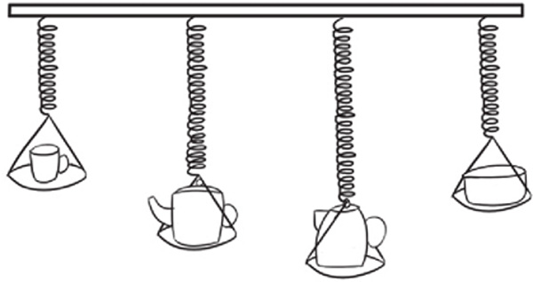
2.4位叔叔用同样的扁担挑着东西去赶集，你知道谁挑的货物最重吗？
3.4辆相同的货车分别运了很多蔬菜，你知道哪辆货车运的蔬菜最轻吗？
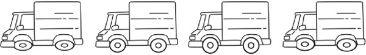
4.4位渔夫划着4艘同样的渔船打鱼回来了，你知道哪位渔夫打的鱼最多吗？每位渔夫都一样重。
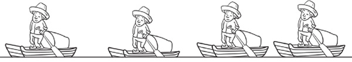
5.3个同样的水壶都装满了水，分别往3个同样大小的玻璃杯里倒水，你知道哪个水壶里剩的水最多吗？
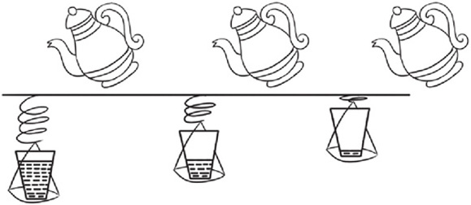
6.把4块同样大小的木头放在水里，你能从重到轻给木头排序吗？序号写在图下的括号中。
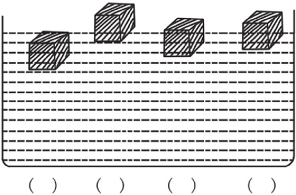
7.4杯同样多的水，分别放入数量不等的方糖，哪杯水最甜呢？杯下的正方形的数量代表放入的方糖数量。
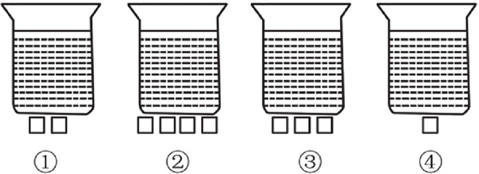
8.4杯水一样甜，哪个杯子放进去的糖最多呢？
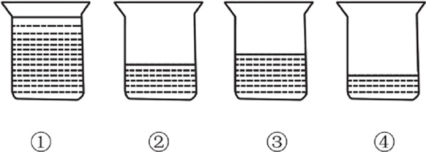
9.往3个大小相同，装的水也相同的杯子里分别放入一个玻璃球，你知道哪个杯子里的玻璃球最大吗？
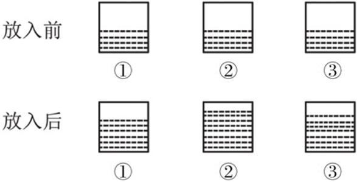
10.3个大小相同，装的水也相同的玻璃杯里分别放入了一个玻璃球，你知道哪个杯子里的玻璃球最小吗？
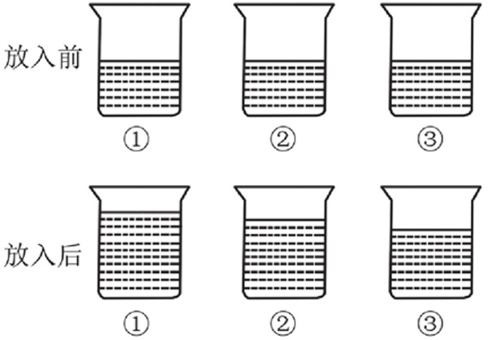
11.4个人在钓鱼，都钓到鱼了，你知道谁钓的鱼最大吗？
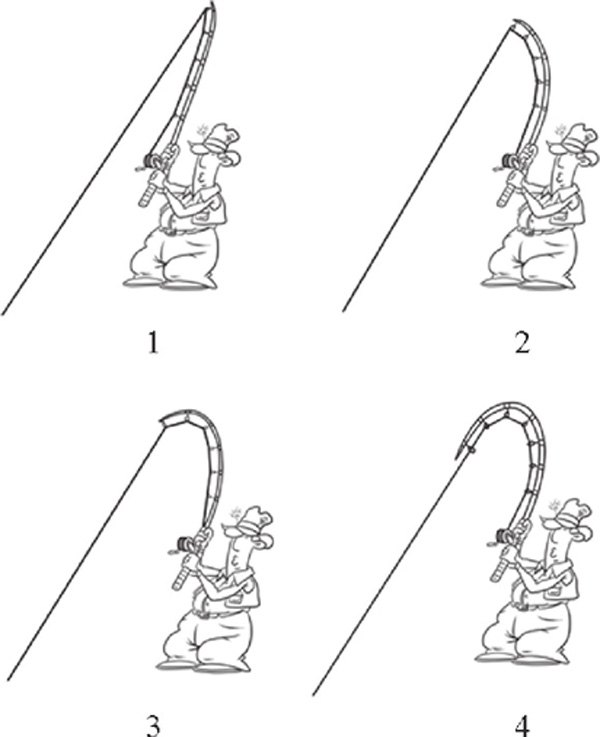